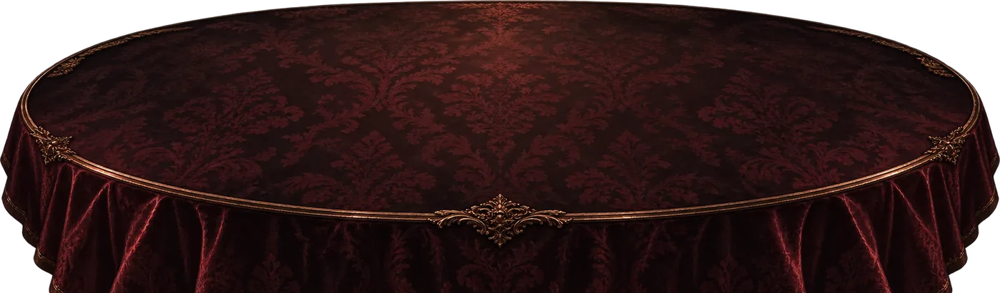
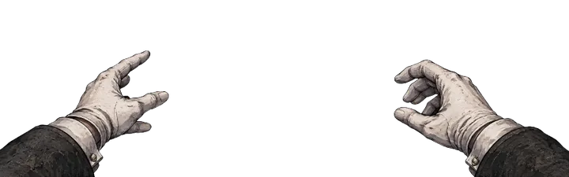

TICATICA GAMES
Demo · 虛擬點數遊戲 42 款遊戲
荒島遠征
Frontier Islands
砍出道路，建立據點，挑戰五大區域與五十關考驗。
社畜要下班
Roar Through the Ceiling
對著手機大吼，火箭椅一路撞破天花板提早下班。
數字吞噬
Number Gulp
吃掉比你小的數字、躲開比你大的，剛好變成目標數字就過關。
鏡像雙子
Mirror Twins
同時操控兩位太空人，其中一位左右相反，一起走進傳送艙。
影子接力
Shadow Relay
影子會照你的路線重走，讓它點亮燈籠，別被它追上。
一筆畫守城
One-Line Defense
只能畫一條線擋住湧向核心的敵人，線越長消失越快。
人魚接龍
Mermaid Spider
牌背是美人魚的蜘蛛接龍，排滿 K 到 A 收成珍珠。
俄羅斯方塊
Block Drop
經典落塊消行，旋轉、牆踢與暫存都有。
最後的晚餐
The Last Banquet
與莊家在暗室輪流喝未知的酒，用記憶、機率和道具撐到最後。
深海連連看
Ocean Link
把相同的圖案連起來，穿越礁石與移動棋盤。
拒絕加班
No Overtime!
自動開火擋下湧入的工作，打倒 17:00 大魔王準時下班。
小灰出門
Pet Walkies
一鍵帶小灰散步，路上撞見野狗、河鯊和幸運轉盤。
尊嚴保衛戰
The Last Hair
頂著最後三根頭髮，在強風中走完 500 公尺去面試。
血壓上升
Midnight Mosquito
深夜當蚊子，吸飽血再從窗戶逃走，別吵醒他。
別看
Don’t Peek
抱著八音盒夜逃，聽聲辨位躲開走廊裡的東西，點對牠怕的道具。
下班保衛戰
Clock Out
擺好辦公用品擋住一波波工作，撐到 17:00 打卡下班。
打磚塊
Breakout
移動擋板反彈小球，打光磚塊一關闖過一關。
布丁突圍
Pudding Dash
拼出武器，背著小王子殺出重圍。
偷睡大師
Nap Master
趁主管走開偷睡，他回頭前放開，還能丟垃圾砸暈他。
鯉魚躍龍門
Carp Leap
蓄力起跳，越過一道道石瀑。
外送員大戰惡犬
Rider vs Dogs
巷子裡閃狗送餐，餐涼之前送越多越好。
胖老闆追人
Chubby Boss Chase
遲到了！跳過障礙，別被胖老闆追上。
偷水果的貓
Fruit Thief Cat
換道、跳籃子，偷水果躲開老闆娘。
寶寶逃洗澡
Baby Bath Escape
跳過玩具、鑽過櫃子，別被媽媽抓去洗澡。
蓋樓大師
Sky Builder
抓準時機疊樓層，蓋得挑戰高度紀錄，享有 BONUS 獎勵。
青蛙吃蟲
Frog Snack
對準最底下的蟲按下去吃掉牠，紅色帶刺的不能吃。
泡麵煎餅翻面
Noodle Pancake
半夜偷煮宵夜，晃手機煎到金黃再甩起來翻面。
捷運搶位
MRT Seat Grab
看小動作猜誰要下車，一階一階往上搶座位。
一口氣探險
One Breath Dive
選路線往下潛撿珍珠，氧氣用完前上浮，挑戰最高分。
深海火線
Reef Blaster
七種武器三選一，闖過水雷、礁石與深海巨獸。
死神打工
Reaper Shift
普通靈魂要接走，綠色通行證要放行。
屋頂貓貓
Rooftop Cat
無盡跑酷，看你能跑多遠。
便便鳥大戰狼群
Poop Bird vs Wolves
跳過仙人掌和狼群，用便便把狼王打跑。
插珍奶
Boba Straw
抓準力道插吸管，原版粉紅珍奶小遊戲。
宣傳車
Campaign Truck
繞市區拉票，經過學校、醫院、豪宅要按住靜音。
深海釣手
Fishing
按住收線、放開卸力，把大魚拉上岸。
偷偷下班
Sneak Out
按住偷溜，老闆回頭前趕快裝忙。
插隊大師
Queue Cutter
趁乘客背對你，偷偷往前插一位。
閃避跑酷
Dodge Run
點左、點右換道，避開一路上的障礙。
時序修復
Dream Repair Shop
抓準時機，讓指針停在青綠色區域。
踩地雷
Minesweeper
低中高難度或自訂棋盤，重溫經典踩地雷。
養珠
Pearl Merge
滑動合併珍珠，養出更大的數字。
壓潰深度
Crush Depth
隨潛艇一起下潛，在壓潰前上浮。
落珠
Pearl Drop
投下珍珠，看它穿過釘陣落在哪一格。
測深
Sonar Dice
設定聲納讀數範圍，等待海底回音。
探底
Deep Probe
選定目標倍率，看看探測錘能到多深。
漲退
High Tide
猜下一張牌更高或更低，連猜累積。
羅盤
Compass
轉動深海羅盤，等待指針停下。
浮升
Ascent
挑選安全的氣泡，一層一層往上浮。
橫渡
Reef Run
帶小海龜穿越暗流，決定何時收手。
排行榜
| 玩家 | 遊戲 | 最佳紀錄 |
|---|
MEMBER
Chloe
點數和紀錄存在這台裝置的瀏覽器裡。換裝置或清除瀏覽資料後不會保留。
我的角色與外觀商店
玩遊戲，收集新造型我的冒險造型
外觀不影響遊戲能力，兌換後永久擁有。
玩出你的收藏
有效遊玩每分鐘 2 點，每日最多 60 點；背景、選單、暫停及閒置超過 60 秒不計。每款遊戲每日首次完成至少 10 秒有效遊玩的回合，再獲得 5 點；原有技能與里程碑獎勵另外保留。
建立據點，清除守衛，點亮燈塔。
金幣湊滿了！選一張強化卡
交易與裝備
靠近營地購買裝備，靠近市集出售倉庫材料。金幣只用於本遊戲。
第 11 關起可蓋戰士小屋，消耗倉庫木材與石材訓練戰士，自動保護大本營。大本營血量歸零就會失敗。
遠征規則與存檔
後續五十關、失敗重試與讀取存檔不限次數，沒有額外成就獎勵。每關建立新據點，裝備、金幣與最高通關紀錄保留，當地材料與建築不跨關。每五秒及暫停時自動存檔；切換遊戲或背景會暫停，回來需按繼續。存檔只在本瀏覽器，不跨裝置。
五個區域各十關，交替建設、救援、討伐、守點與精英戰，每十關有區域首領。守點須先建箭塔；完成建設與任務後才能建燈塔，自行選擇前往下一島。後期預告縮短、敵人組合增加，第三區起有琥珀色地面危險預告。寒霜區未建鐵匠鋪時移速降低。夜幕提高敵人移速但有上限，沒有隱藏逾時失敗。
潛得越深倍率越高，在艇身壓潰前按下上浮。
也可以按 空白鍵 下注與上浮。
本回合艇員
其他艇員為電腦模擬玩法與機率
每回合開始前有 6 秒下注時間。潛艇下潛後倍率從 1.00× 開始上升（每下潛 1,000 公尺加 1×），你在壓潰前按「上浮」就拿回「下注 × 當下倍率」；來不及上浮就失去這一注。
壓潰點在下潛前就已決定：壓潰倍率 = max(1, 0.97 ÷ (1 − r))，r 是 0 到 1 的均勻亂數。也就是有 3% 的回合會在 1.00× 立刻壓潰，長期期望回報約 97%，不論你選哪個上浮倍率都一樣。
這是純前端的示範，點數沒有任何現金價值，餘額只存在你的瀏覽器裡。
點一下翻格；手機長按插旗／取消，電腦按滑鼠右鍵。鍵盤按 F 也可插旗。
插旗數等於數字時，點數字快開周圍；旗子插錯仍會踩雷。
經典小遊戲 · 不限次數
5×5 · 3 雷
- 剩餘安全格
- 22 格
- 已插旗
- 0 / 3
- 安全格總數
- 22 格
翻開全部 22 格安全區就過關。第一格也可能踩雷。
玩法說明
選擇低（5×5、3 雷）、中（8×8、10 雷）、高（10×10、20 雷），或自訂 N×N 棋盤。N 為 2～10 的整數，地雷數為 1～N×N−1；進行中不能更改設定，每局結束後可重新選擇。
地雷在開局時隨機配置，第一格也可能踩雷。數字為周圍八格雷數，空白區自動展開，手機長按格子插旗或取消，電腦使用滑鼠右鍵；鍵盤聚焦格子後按 F 也可插旗。翻開全部安全格就獲勝，踩雷則結束。當地雷數為 N×N−1 時只有一格安全，只有翻到唯一的安全格才獲勝。
不限次數，另依平台規則累積遊玩點數；大棋盤可水平捲動。重新整理會放棄本局，可隨時重新開始。
- 最高倍率
- —
- 中央倍率
- —
- 期望回報
- —
- 最近落點
珍珠會一路撞著礁釘往下沉，落進哪一格就拿那格的倍率。可以連按連投。
玩法與機率
每顆珍珠在每一排礁釘都有一半機率往左、一半往右，所以落在中央的機會最大，越靠兩側越難。落進的那一格倍率 × 下注就是領回的點數；中央的倍率低於 1，兩側才是大獎。
風險越高，中央賠得越多、兩側給得越高；排數越多，兩側越難到達、最高倍率也越高。每組設定的倍率表都是先依二項分布算出各格機率，再把期望回報調到約 97%，面板上的「期望回報」是四捨五入後的實際數字。
落點在投下的瞬間用瀏覽器亂數決定，動畫只是把結果演出來。點數與另外兩個遊戲共用，沒有任何現金價值。
- 分數
- 0
- 最大珍珠
- —
- 最佳分數
- 0
把相同數字的珍珠滑在一起，合併成更大的珍珠。
可以用 方向鍵、WASD，或在盤面上滑動。
玩法
每次滑動，盤上所有珍珠都往同一個方向靠攏，兩顆相同數字的珍珠相撞就合併成兩倍大，並把合併後的數字加進分數。每滑一步會多長出一顆 2（九成）或 4（一成）。
盤面塞滿、而且沒有任何相鄰的相同珍珠時，這一局就結束。這個遊戲只扣入場點數，不會退點；中途放棄重開會再扣一次。
最佳分數只存在你的瀏覽器裡。
- 勝率
- —
- 倍率
- —
- 猜中可領
- —
拉動門檻決定勝率：勝率越低，倍率越高。
玩法與機率
每次聲納會回傳一個 0.00 到 99.99 的讀數，共 10,000 種結果、機率相同。你先選門檻，再猜讀數會「低於門檻」還是「在門檻以上」（剛好等於門檻算以上）。亮色那一段就是你會贏的範圍。
猜「低於 T」的勝率是 T%，猜「T 以上」的勝率是 (100 − T)%。倍率固定是 97 ÷ 勝率(%)，所以不論門檻怎麼選，長期期望回報都約 97%。勝率可調範圍是 2% 到 95%，對應倍率 48.50× 到 1.02×。
讀數在按下的瞬間用瀏覽器亂數決定。點數與其他遊戲共用，沒有任何現金價值。
- 勝率
- —
- 目標倍率
- —
- 達標可領
- —
目標訂得越高越難達到，達到了就拿目標倍率。
玩法與機率
先訂一個目標倍率，再放下探測錘。探測錘會瞬間沉到某個倍率：沉到的倍率大於或等於你的目標就算贏，領回「下注 × 目標倍率」；沒到就失去這一注。贏的時候拿的是你訂的目標，不是探測錘實際沉到的倍率。
結果的算法和「壓潰深度」相同：結果 = max(1, 0.97 ÷ (1 − r))，所以達到目標 T 的機率是 97% ÷ T，長期期望回報約 97%，不論目標訂多少都一樣。它等於是不用等、也不用自己按上浮的 Crash。
結果在按下的瞬間用瀏覽器亂數決定。點數與其他遊戲共用，沒有任何現金價值。
- 目前倍率
- —
- 可領
- —
- 猜對
- —
按開始翻出第一張牌，每猜對一次倍率就往上，隨時可以領回。
玩法與機率
牌面由小到大是 A、2 … 10、J、Q、K，A 最小。按開始後翻出一張牌，你猜下一張會「漲」（更大或相同）還是「退」（更小或相同）。猜對倍率就乘上去，可以繼續猜或領回「下注 × 目前倍率」；猜錯就失去這一注。
手上是 A 時，「漲」變成嚴格更大、「退」變成猜剛好相同；手上是 K 時反過來。每局可以換牌 3 次，換牌不影響倍率。
每張牌都是從 13 種點數裡等機率抽出（等於無限副牌，不會算牌）。倍率是每次猜測「1 ÷ 猜中機率」連乘，最後乘上 0.97，所以長期期望回報約 97%。按鈕上會直接顯示該選項的機率與猜中後的倍率。
石頭 0 點 · 銅礦 2 點
金礦 3 點 · 鑽石 5 點
每日補給 · 不扣入場點數
- 今日次數
- 3 / 3
- 今日已獲得
- 0 / 30 點
- 剩餘挖掘
- 5 / 5
- 本局分數
- 0
- 最佳分數
- 0
每局 5 次機會，一次挖一格，看看能找到多少礦物！
每日補給規則
每天 3 次，每次挖 5 格。36 格礦區有 18 格石頭、10 格銅礦、6 格金礦與 2 格鑽石，每次隨機排列；石頭 0 點、銅礦 2 點、金礦 3 點、鑽石 5 點，立即加入共用點數。每天最多獲得 30 點，接近上限時只發剩餘額度，達上限即完成今日補給。
台灣時間凌晨 0 點重置。次數在開始時使用，重新整理可繼續本次剩餘挖掘，不會補發已挖過的獎勵。記錄僅保存在此瀏覽器，不跨裝置同步；不提供付費加挖。分數與最佳分數另計，不等於點數。
- 最高倍率
- —
- 有賠機率
- —
- 期望回報
- —
羅盤停下時，上方指針指到哪一格就拿那格的倍率。
玩法與機率
按「轉動羅盤」扣下注，羅盤停下時上方指針指到的那一格決定倍率，領回「下注 × 倍率」；指到 0 就失去這一注。每一格被指到的機率相同。
低風險：十格裡八格有賠（1.2× 或 1.3×）、兩格是 0。中風險：一半的格子是 0，另一半是 1.5× 到 3×。高風險：整個羅盤只有一格有賠，倍率是「格數 × 0.97」（10 格 9.7×、20 格 19.4×、30 格 29.1×）。低、中風險的格數只影響羅盤切得多細，機率不變。
每種設定所有格子的倍率平均都剛好是 0.97，所以期望回報是 97%。停在哪一格在按下的瞬間用瀏覽器亂數決定，轉動只是把結果演出來。點數與其他遊戲共用，沒有任何現金價值。
- 目前倍率
- —
- 下一層
- —
- 已上浮
- —
從最底層開始，每層選一條水道。選到氣泡就往上一層，選到海膽就結束。
玩法與機率
共 8 層，從最底下那層開始，每層選一格。選到氣泡就上浮一層、倍率往上；選到海膽就失去這一注。每上浮一層之後都可以按「領回」拿走「下注 × 目前倍率」，浮到最頂層會自動領回。
難度決定每層有幾格、其中幾格安全：簡單是 4 格 3 安全，中等 3 格 2 安全，困難 2 格 1 安全，極限 3 格只有 1 安全。浮完 8 層的倍率分別是 9.69×、24.86×、248.32×、6,364.17×。
倍率是「(格數 ÷ 安全格數) 的層數次方 × 0.97」，所以不論難度和在第幾層領回，長期期望回報都約 97%。海膽位置在按下開始時用瀏覽器亂數決定。點數與其他遊戲共用，沒有任何現金價值。
- 目前倍率
- —
- 每道過關率
- —
- 已橫渡
- —
每前進一道倍率就往上，但每一道都可能遇上暗流。見好就收。
玩法與機率
按開始後，小海龜停在最左邊。每按一次「前進一道」就往右渡過一道海流：平安渡過倍率就往上，遇上暗流就被捲走、失去這一注。每渡過一道之後都可以按「領回」拿走「下注 × 目前倍率」，渡完十二道會自動領回。
這個遊戲不用選格子，只決定要不要再往前。難度決定每一道的過關率：簡單 92%、中等 85%、困難 75%、極限 60%。渡完十二道的倍率分別是 2.63×、6.82×、30.62×、445.62×。
倍率是「0.97 ÷ 過關率的道數次方」，所以不論難度和在第幾道領回，長期期望回報都約 97%。暗流在第幾道出現，在按下開始時就用瀏覽器亂數決定；結束後會用虛線標出來。點數與其他遊戲共用，沒有任何現金價值。
- 目前關卡
- 第 1 關
開始後指針開始旋轉，在青綠色區域按停針即可過關。
按「停針」、點擊儀表或按 空白鍵。過關後按「挑戰下一關」繼續，續關不限次數。
玩法與點數
續關不限次數，關卡沒有上限。指針停在青綠色區域就過關，錯過則本局結束；沒有額外成就獎勵，關卡成績不轉換成錢包點數。
目標範圍逐漸縮小，最低 24°；指針逐漸加速，最高每秒 2.4 弧度。第 11 關起每關最多反轉一次，第 21 關起最多兩次。反轉前中心燈閃爍並顯示文字至少 0.5 秒；接近目標區時延後反轉，兩次反轉至少間隔 1.5 秒，反轉不改速度。引入反轉的初期暫緩縮圈與加速。
切換遊戲、背景分頁或視窗失焦會暫停，返回可繼續；過關等待不計有效遊玩時間。重新整理會放棄本局，點數與其他遊戲共用，沒有現金價值。
- 本局距離
- 0 m
- 最佳紀錄
- 0 m
- 下一個獎勵
- 3500 m · +3
- 潛行速度
- 1.0×
沒有終點，越跑越快；每排都要重新找通路，撞上障礙才結束。
只需點畫面左半邊或右半邊換道，也可用下方左右按鈕或鍵盤 ← →。避開珊瑚色障礙。
玩法與點數
只需左右換道躲避珊瑚色障礙。每排至少留一條可通行的路線，不需要跳躍或下潛；相鄰兩排的通路不同，需要持續換道。沒有終點，也沒有關卡：速度會慢慢加快，兩排障礙之間可以換道的時間也越來越短，撞上障礙這一局就結束。
跑到特定的遠距離時，獎勵點數當場入帳，之後撞上障礙也不會收回：3,500 公尺 +3、4,500 公尺 +7（累計 10 點，累計獲得）、5,500 公尺 +15、6,500 公尺 +30，之後每多 1,000 公尺 +40。這是固定點數，沒有倍率。這些距離刻意設得很遠，一般玩家大約能跑 3,000 公尺，跑到 4,500 公尺需要相當穩定的反應。
切換遊戲或背景分頁會暫停。重新整理會放棄本局，已入帳的點數會保留；最佳紀錄保存在瀏覽器中。
- 已插過乘客
- 0 / 10
- 前方還有
- 10 人
- 目前隊伍
- 第 1 隊
- 本局累計超過
- 0 人
- 最佳紀錄
- 0 人
- 下一個獎勵
- 40 人 · +3
先扣入場點數。每點一下插過一位，移動時被前方任一乘客看見即失敗；不動不會被抓。
點「往前插一位」、遊戲畫面或按 空白鍵。警示本身不會抓人，但沒有保證安全時間。
玩法、風險與點數
每隊乘客各自隨機在背對、警示、回頭間切換。警示可能解除，也可能隨時轉為回頭；前方任一乘客回頭注視時移動，就會被發現。站著不動不會被抓。
每點一次插過一人，移動約 0.4～0.7 秒，期間被看見也會失敗。沒有終點：插到隊首後立刻換下一隊，第一隊 10 人，之後每隊多 2 人（最多 30 人），乘客休息時間越來越短、警示後轉頭的機率也越來越高，被發現這一局才結束。
累計插過的人數達到特定數量時，獎勵點數當場入帳，之後被發現也不會收回：40 人 +3、55 人 +7（累計 10 點，累計獲得）、70 人 +15、90 人 +30，之後每多 20 人 +40。這是固定點數，沒有倍率。這些人數刻意設得很高，一般玩家大約能插過 25 人。
切換遊戲或背景分頁會暫停。重新整理會放棄本局，已入帳的點數會保留。點數與其他遊戲共用，沒有現金價值。
- 目前關卡
- 1 關
- 下班進度
- 0%
- 最佳紀錄
- 0 關
- 下一個獎勵
- 完成 9 關 · +3
保留原版辦公室畫面。按住前進、放開裝忙，走到出口就自動進入下一關，沒有終點。
也可按住 空白鍵、→ 或 D 前進。
玩法、難度與點數
按住遊戲畫面、前進按鈕或空白鍵就走路，放開即站定假裝工作。老闆回頭時繼續走就被抓，這一局結束。
沒有終點：走到出口立刻進入下一關，直到被抓為止。第一關需實際移動 6 秒，每關增加 2 秒，第十關起固定為 24 秒。之後老闆回頭更頻繁，警示時間由約 0.66 秒逐步縮短，最短 0.25 秒；第三關起警示可能是假動作。第四關起老闆有機會跳過警示直接回頭（機率由 15% 逐步增加，最高 50%），直接回頭有約 0.34 秒的反應時間，之後每關縮短 0.01 秒，最短 0.22 秒；先警示再回頭的反應時間由約 0.15 秒逐步縮短，最短 0.12 秒。
通關數累計到特定關數時，獎勵點數當場入帳，之後被抓也不會收回：9 關 +3、11 關 +7（累計 10 點，累計獲得）、13 關 +15、16 關 +30，之後每多 3 關 +40。這是固定點數，沒有倍率。這些關數刻意設得很高，一般玩家大約能通過 5 關。
切換遊戲、背景分頁或視窗失焦會停止前進；切換遊戲與背景分頁會暫停。重新整理會放棄本局，已入帳的點數會保留。點數共用。
- 挑戰第幾條
- 第 1 條
- 距離岸邊
- 20.0 m
- 最佳紀錄
- 0 條
- 下一個獎勵
- 釣到 10 條 · +3
小丑魚
張力 20～75 較穩定
先下竿，再按住收線；掙扎時放開卸力，避免斷線。
可按住畫面、收線按鈕或 空白鍵。放太久魚會游遠，線太鬆可能脫鉤。
玩法與點數
按住收線可以拉近魚，但張力會上升；放開可卸力，但魚會逐漸游遠。平穩時可收線，水花變大時要準備卸力；猛烈掙扎時硬拉會快速提高張力，疲累時收線最有效。
沒有終點：每釣上一條，下一條魚馬上上鉤，直到斷線或脫鉤這一局才結束。魚越大，距離越遠、掙扎越久，硬拉的張力也上升更快；約第 20 條之後難度不再增加。張力達 100 就斷線；低於或等於 8 持續 1.2 秒會脫鉤。拖時間、等待與放線都沒有幫助。
釣到特定條數時，獎勵點數當場入帳，之後斷線也不會收回：10 條 +3、12 條 +7（累計 10 點，累計獲得）、14 條 +15、17 條 +30，之後每多 3 條 +40。這是固定點數，沒有倍率。這些條數刻意設得很高，一般玩家大約釣 8 條左右。
切換遊戲或背景分頁會暫停並放開收線，回來需要重新按住。視窗失焦會放開收線。重新整理會放棄本局，已入帳的點數會保留。點數與其他遊戲共用。
- 目前選票
- 200
- 吵到安靜區
- 0 / 5
- 已經過
- 0 棟
- 最佳得票
- 0
- 下一個獎勵
- 8,000 票 · +3
宣傳車沿街往右開，沒有終點，越開越快。平常放開讓喇叭廣播拉票，前方出現紅色的學校、醫院、豪宅時按住畫面靜音。
可按住畫面、靜音按鈕或 空白鍵。畫面上方的「接下來」會預告前面幾棟建築。吵到安靜區、或在一般路段靜音太久都算失誤，累計 5 次就落選。
玩法、計票與點數
宣傳車沿著街道自動往右開，沒有終點：車速從約每秒 300 像素起跳，並持續加快到約 800（約 2.7 倍），建築越來越快閃過。街上的學校、醫院、豪宅是安靜區，以紅色標示並在路面畫出紅色區段；一開始約三成是安靜區，越往後越多，最多約六成，但不會連續出現三棟。
前方的建築會提早出現在畫面右側，畫面上方的「接下來」也會列出接著要經過的六棟。放開時喇叭廣播、按住時靜音。經過一般建築：依廣播時間比例得票，全程廣播得 200 票；但若廣播不到 30% 的時間（靜音太久），算沒有宣傳到，記一次失誤。經過安靜區：有 70% 以上的時間保持靜音就算安靜通過，得 100 票；否則算吵到，扣 400 票並記一次失誤。累計 5 次失誤就落選，這一局結束。
開局有 200 票。得票累計到特定數量時，獎勵點數當場入帳，之後落選也不會收回：8,000 票 +3、10,000 票 +7（累計 10 點，累計獲得）、12,000 票 +15、15,000 票 +30，之後每多 3,000 票 +40。這是固定點數，沒有倍率；每個里程碑一局只入帳一次，即使票數被扣掉再回升也不會重複。這些票數刻意設得很高，一般玩家大約會在 4,000～6,000 票落選。
切換遊戲或背景分頁會暫停並放開靜音，回來需要重新按住。重新整理會放棄本局，已入帳的點數會保留。點數與其他遊戲共用，沒有現金價值。
原版畫面完整保留。先按遊戲裡的開始按鈕，
- 本局距離
- 0 m
- 最佳紀錄
- 0 m
- 下一個獎勵
- 150 m · +3
開始後小貓開始在屋頂上奔跑，沒有終點。點畫面跳躍，跑到里程碑獎勵會當場入帳，之後摔下去也不會收回。
點一下跳躍，按越久跳越高；也可以用 空白鍵 或 ↑。別掉進屋頂間的空隙，也別撞上牆。
玩法、里程碑與點數
小貓會自動往前跑，沒有終點，一路跑到掉下去或撞牆為止。起步速度較慢，之後隨距離慢慢加快，約 1,000 公尺後達到最高速；越往後屋頂越窄、高低落差越大。點畫面或按空白鍵跳躍，按得越久跳得越高；在快落地前提早按，落地後會自動接著跳；剛走出屋頂邊緣的 0.14 秒內仍可起跳。
里程碑獎勵：跑到下列距離時，獎勵點數當場入帳，之後摔下去也不會收回。150 公尺 +3、300 公尺 +7（累計 10 點，累計獲得）、500 公尺 +15、750 公尺 +30、1,000 公尺 +60，之後每多 250 公尺 +40。這是固定點數，摔下去時也不再另外結算。未達里程碑不會扣除點數。
這些距離刻意設得很遠：要連續準確地跳上百次，一般玩家很難跑過 300 公尺，1,000 公尺只有技術最好的玩家才會看到。這是操作技巧遊戲，結果取決於跳躍與按住的時機。
切換遊戲或背景分頁會暫停，回來後繼續。重新整理會放棄本局，已入帳的獎勵會保留。最佳紀錄保存在瀏覽器中；點數與其他遊戲共用，沒有現金價值。
- 本局距離
- 0 m
- 擊退狼王
- 0 隻
- 最佳紀錄
- 0 m
狼群偷走了你的蛋！開始後開始奔跑，跳過障礙，狼王出現時用便便把牠打跑。
看障礙上方的標記：1 個點點 1 下，2 個點點 2 下（二段跳），2 個點加長條是第二下要按住。戴王冠的狼王出現時，按畫面右下角的便便按鈕（或 X）丟牠，其他地方點一下是跳躍（或 空白鍵）。
玩法與點數
小鳥會自動往前跑，速度隨距離慢慢加快，沒有終點，撞到任何障礙這一局就結束。障礙有仙人掌和迎面衝來的狼，上方的標記告訴你怎麼跳：1 個點是點 1 下；2 個點是點 2 下，在空中再跳一次；2 個點加長條是點 2 下，第二下按住不放可以飛得更高。
每通過 8 個障礙，戴王冠的狼王會出現。牠跳不過去，必須按右下角的便便按鈕丟牠，打中 3 次才會被擊退；便便每 0.3 秒可以丟一次。
每擊退一隻狼王，救回一顆蛋，並獲得 1 點，當場入帳，之後撞到障礙也不會收回。跑多遠不另外給點數，只有打贏狼王才有。這是操作技巧遊戲，結果取決於跳躍與丟便便的時機。
切換遊戲或背景分頁會暫停，回來後繼續。重新整理會放棄本局，已入帳的點數會保留。最佳紀錄保存在瀏覽器中；點數與其他遊戲共用，沒有現金價值。
- 本局吃掉
- 0 隻
- 目前等級
- Lv.1
- 最佳紀錄
- 0 隻
青蛙餓了！開始後開始，箭頭掃到最底下那隻蟲的中間就按下去。
按 空白鍵 或點一下畫面吐舌頭。箭頭要對準最底下那隻蟲的中間才吃得到。蟲子閃黃色是警告，變成紅色帶刺時不能吃，等牠變回粉紅色再吃。
玩法與點數
蟲子疊成一座塔，黃色箭頭會在最底下兩隻蟲之間上下移動。箭頭對準最底下那隻蟲的中間時按空白鍵或點畫面，青蛙就會吃掉牠，整疊往下掉一格；對得越準分數越高。沒對準不扣愛心，但會停頓一下、連擊歸零，還會少一點飽食。
有眉毛的粉紅色蟲會生氣：先閃黃色警告半秒，再變成紅色帶刺。紅色的時候吃牠會被螫，扣一顆愛心；等牠變回粉紅色就可以吃。在閃黃色時搶先吃掉另外加分。
飽食條會一直下降，吃蟲才能補回來。愛心扣完或飽食歸零，這一局就結束。每吃滿 10 隻升一級，箭頭變快、生氣的蟲變多，飽食回復一些，並獲得 1 點，當場入帳，之後結束也不會收回。分數與連擊只是顯示用，不直接換點數。這是操作技巧遊戲，結果取決於按下的時機。
切換遊戲或背景分頁會暫停，回來後繼續。重新整理會放棄本局，已入帳的點數會保留。最佳紀錄保存在瀏覽器中；點數與其他遊戲共用，沒有現金價值。
- 目前關卡
- 第 1 關
- 考績
- ♥♥♥
- 最高分
- 0 分
主管在巡邏！開始後開始，按住睡覺鍵累積睡意，看到頭上冒出「!」就放開。
按住 空白鍵 或畫面左下大按鈕睡覺，按 J 或右下按鈕丟垃圾。睡越久睡越深、睡意增加越快，但醒得也越慢。主管頭上冒出「!」時要立刻放開，否則會被抓。丟垃圾砸到主管血量歸零，他會暈倒，暈倒時可以安心睡。
玩法與點數
你在辦公桌前，主管在走道來回巡邏。按住睡覺鍵累積睡意，睡意條滿了就過關，共 10 關。主管回頭前，頭上會先冒出紅色「!」；他盯著你的時候，如果你還在睡、剛放開還沒醒、或正在丟垃圾，就會被抓，扣一顆考績，睡意也會被扣掉一部分。考績扣完就被炒魷魚，這一局結束。
丟垃圾可以砸主管，每個垃圾扣他 1 點血；垃圾有數量限制，會慢慢補。血量歸零他會暈倒幾秒，暈倒時你睡得更快、不會被抓。但每被砸一次，主管下一次回頭會提早一點，亂丟會讓他更快轉過來。從第 3 關起，「!」有時只是虛驚一場；從第 5 關起，他看完一次可能再回頭瞪你一次。
每過 1 關獲得 1 點，當場入帳，之後結束也不會收回；10 關全過共 10 點。分數只是顯示用，不直接換點數。這是操作技巧遊戲，結果取決於你放開按鈕的時機。
切換遊戲或背景分頁會暫停，回來後繼續。重新整理會放棄本局，已入帳的點數會保留。最高分保存在瀏覽器中；點數與其他遊戲共用，沒有現金價值。
- 目前班次
- 第 1 班
- 本班進度
- 0 / 10
- 剩餘愛心
- 3 / 3
- 累計接走
- 0 位
- 最佳紀錄
- 0 位
- 下一個獎勵
- 120 位 · +3
綠色通行證全程可見
冥界人手不足，你來幫忙點名。接走普通靈魂，放行帶綠色通行證的乘客。
點畫面、操作按鈕或按 空白鍵 揮鐮。揮空後有 0.35 秒恢復時間。
玩法與點數
保留原版的可愛死神、靈魂和輸送帶。普通靈魂進入金色區域時點一下接走；帶綠色光環通行證的要放行，讓他自己通過。漏接普通靈魂或誤接持證靈魂會失去一顆心；揮空不扣心，但鐮刀有 0.35 秒冷卻，不能一直連點。每局三顆心，不會補滿，三顆心用完這一局就結束。
沒有終點：每正確處理 10 位靈魂就升一班，輸送帶越來越快、金色區域越來越窄、持證靈魂也越來越多。第四班起綠色通行證靠近判定區時會淡去，第七班起更早淡去，需要先記住誰該放行。即使高難度，相鄰靈魂的時間間隔也長於鐮刀冷卻。
正確處理（接走普通靈魂、放行持證靈魂）累計到特定數量時，獎勵點數當場入帳，之後三顆心用完也不會收回：120 位 +3、150 位 +7（累計 10 點，累計獲得）、200 位 +15、260 位 +30，之後每多 50 位 +40。這是固定點數，沒有倍率。這些數量刻意設得很高，一般玩家大約處理 100 位就會用完三顆心。
切換遊戲、背景分頁或視窗失焦會暫停；重新整理會放棄本局，已入帳的點數會保留。點數與平台共用。
- 目前關卡
- 第 1 關
- 剩餘生命
- 3 / 3
- 出怪波數
- 0 / 18
- 目前武器
- 脈衝彈 Lv.1
- 每次射擊
- 1 傷害 × 1 發
每關開始前三選一強化
航速 1.00×- 累計擊破
- 0 隻
- 最佳通關
- 0 關
- 下一次獎勵
- 0 / 10 關
- 本輪已獲得
- 0 點
只需左右移動，角色會自動射擊。對準怪物、閃開障礙，挑戰沒有終點的深海防線。
武器、怪物與障礙
在畫面上按住拖曳，或按住左右按鈕、鍵盤 ← →／A D 自由移動。漏怪、碰到怪物或被墨彈擊中扣 1 心；3 心跨關保留。
無盡關卡：每通過 10 關獎勵 1 點，立即入帳。第 10 關後可繼續挑戰；已入帳點數不因死亡或收隊扣回。
玩法、武器與點數
角色自動開火，只需左右移動對準怪物，閃開障礙。在畫面上按住拖曳（或按住左右按鈕、鍵盤 ← →／A D）可以自由移動到任何位置。武器分成 7 種形態：脈衝、雙管速射、穿透光槍（穿透最多 3 隻）、追蹤火箭（追蹤並爆炸）、電漿砲（三發穿透）、寒流彈（命中減速 2 秒）與電鏈彈（命中後電擊附近 2 隻）。一開局只有最小的單發脈衝槍，怪也比較少。之後每打完 36 波（約一分鐘，跨關累計），遊戲會暫停並從 3 張卡中選 1 張：換成另一種武器形態；生命不足時其中一張會是「修補船體」（恢復 1 心）。選卡只換形態，不增加火力；火力等級只在每過一關 +1、擊敗王 +1，決定傷害與射速。火力等級、武器形態與剩餘生命跨關保留。
怪物從 5 個位置落下，一開始每波只有 1 隻，隨著進度越來越密（每波最多 5 隻），體型也比較小。有泡泡章魚、厚甲螃蟹、高速魟魚、預告橫移的電鰻、帶可擊破護盾的海龜，以及擊破會分成兩隻小水母的水母。除了一般怪物，還有障礙：水雷（打爆時會連鎖爆炸，靠近你時引爆會扣 1 心，所以要先打爆）、礁石（擋住子彈、需要打碎，碰到你才扣心，不會因為漏過去而扣心）與噴墨烏賊（停在半空朝你所在的位置吐墨彈，墨彈可以打掉或閃開）。每種新東西第一次登場時會單獨出現，怪物的移動與出怪節奏、血量也會持續增加。沒有關卡上限；第 1 關 54 波，每關增加 12 波、最多 180 波。每 5 關（第 5、10、15……關）的最後會出現深海巨獸：牠左右游動，先用紅色警示標出 1～2 個區域，隨後墨浪沿區域衝下，血量低於一半時還會丟出水雷，擊敗牠才算過關。
全局共 3 心，碰到怪物或讓怪物穿過底部防線，都扣 1 心。每隻怪最多扣一次；生命歸零時當次挑戰結束，已入帳的獎勵保留。每關等所有波次與場上物件結束後過關，可繼續或提前收隊；收隊不額外發點，也不扣回已獲獎勵。
開局、續關與重玩不限次數。第 10、20、30……關各獎勵 1 點並立即入帳，同一里程碑當輪不重複發放，已入帳獎勵保留。
死亡後可重玩目前關卡，保留武器、恢復 3 心，當關敵人與波數重置，從第一波重新開始。重玩不限次數，不會重複發放已獲得的關卡獎勵。
切換遊戲、背景分頁或視窗失焦會暫停。重新整理會放棄回合，最佳通關紀錄儲存在瀏覽器，共用點數沒有現金價值。
- 本局層數
- 0 層
- 本局分數
- 0
- 最佳層數
- 0 層
- ✦ BONUS 已入帳
- 0 點
- 下一個里程碑
- 10 層 · +5 點
開始後起重機開始左右擺盪。點畫面放下樓層，挑戰高度紀錄，達成指定樓層即送 BONUS。
點畫面、按 空白鍵 或 ↓ 放下樓層。放得越準評價越高（Perfect、Great、Good、Average、Poor）；偏太多樓會傾斜，超過 45° 倒塌。Perfect 或 Great 能讓樓回正。
玩法、層數與點數
起重機吊著樓層左右擺盪，點畫面放下；落在下一層上方越準，評價越高、分數越多。偏移會讓整棟樓慢慢傾斜，傾斜超過 45° 就會倒塌；樓層幾乎沒有疊到（Fail）則直接結束。連續 Perfect 有額外加分，Perfect 與 Great 會把傾斜拉回一些。
每局穩定蓋到 10、20、30 層，各立即送固定 BONUS 5 點，每個門檻當局限一次，最多 15 點。造成倒塌的樓層不計獎勵。獎勵採固定門檻；倒塌、失手或重新整理都不扣回已入帳獎勵，結束時不另外發點。分數只用來比較。
切換遊戲或背景分頁會暫停，回來後繼續。重新整理會放棄本局，最佳層數保存在瀏覽器中；點數與其他遊戲共用，沒有現金價值。
- 目前分數
- 0 分
- 目前深度
- 0 m
- 最佳分數
- 0 分
按「開始下潛」或遊戲裡的「深吸一口氣」開始。遊玩點數依平台規則累積。
每層挑一條路往下潛；氧氣高於紅線才能上浮結算，溺水歸零。上浮時若需要丟珍珠減重，實際分數以結束畫面為準。
玩法與成績
每層從幾條路線中挑一條往下潛，會消耗氧氣，並可能拿到珍珠、氧氣或遺物。氧氣條上的紅線是上浮所需氧氣，珍珠越多越重、紅線越高；高於紅線才能上浮，差一點時可以丟掉部分珍珠減重。
分數＝珍珠＋層數×2。上浮或潛到第 40 層海底時這一趟結束，記錄最佳分數；氧氣耗盡分數歸零（若有「救生繩」遺物，第一次耗盡會保留一半珍珠）。分數只是成績，不會換算成點數，也沒有倍率或領回。
這款是回合制，離開畫面不會自動結束；回來後可以繼續同一局。重新整理會放棄本局，最佳分數保存在瀏覽器中；點數與其他遊戲共用，沒有現金價值。
Ocean Link
深海連連看
用時
關卡 1/10 · 剩餘配對 0 · BONUS 0
最高通關 0/10
恭喜通關！
已完成關卡 1/10
累計用時
已獲得 5 點。
玩法與獎勵
點選相同的兩張圖案。連線只能水平或垂直、最多轉彎兩次，可以繞過棋盤外框。礁石會擋住連線與移動。
簡單模式有較大的圖案，所有關卡都是經典配對，適合初學者。
每次遠征連闖 10 關。第 3、6、10 關各送 5 點，每關限領一次，每次遠征最多 15 點。
無法再配對時，剩餘圖案會自動洗牌。手機建議橫放；可用全螢幕放大棋盤。
- 本局階數
- 0 / 8 階
- 最佳紀錄
- 0 階
按「上車」或遊戲裡的「上車」開始。每搶到一次座位升一階，遊玩點數依平台規則累積。
看小動作和隨身物品猜誰要下車，點座位站到他面前。體力歸零或搶滿 8 階，這一趟就結束。
玩法與成績
列車進站前，觀察座位上乘客的小動作與隨身物品，點一下站到你覺得會下車的人面前。猜對就坐下並升一階；猜錯白站一站會扣體力，體力歸零本局結束。
坐著時可以休息，準備好再起身搶下一階；階數越高，進站越快、線索越不可靠、對手也越多。搶滿 8 階或坐到末班車最後一站，這一趟結束，記錄最佳階數。階數只是成績，不會換算成點數，也沒有倍率或領回。
切換到其他遊戲或背景分頁時，列車進站中會自動暫停，回來按「繼續」。重新整理會放棄本局，最佳階數保存在瀏覽器中；點數與其他遊戲共用，沒有現金價值。
半夜偷煮泡麵煎餅：晃手機讓煎餅滑動，外圈變金黃就往上甩翻面。沒有動作感應時可用手指玩。
對著手機大吼讓火箭椅往上衝，撞破 5 層天花板提早下班。不方便出聲可以選按住螢幕。
- 波次
- — / 8
- 理智
- —
- 最高分
- 0 分
開始後開始：先在抽屜擺好工具，再開工。第 5 波完成 +3 點，通關再 +7 點。
擺放階段：點卡片再點抽屜格子放置，同種同等級的工具碰在一起會合成升級；R 旋轉、Delete 回收、Enter 開工。戰鬥階段：點戰場丟便利貼幫忙。
玩法與點數
一天分 8 波（09:00 到 16:00），每波之前先在 6×6 的抽屜裡擺放橡皮筋、咖啡杯、釘書機、螢光筆、耳機、印章、碎紙機，再開工。電子郵件、文件、會議、報告、急件會沿著桌面走向你的座位，漏掉一個就扣理智，理智歸零或被老闆走到桌前就結束。每波完成理智回復 2 點。
每一種工具剋制不同的敵人，咖啡杯和螢光筆放在旁邊還會加強相鄰的攻擊工具。同種同等級的工具可以合成，最高 3 級。會議會鎖住最近的攻擊工具，放一個耳機在旁邊就不會被鎖。
BONUS 是固定獎勵：撐過第 5 波立刻入帳 3 點，通關第 8 波擊退老闆再入帳 7 點，每局各只發一次，兩項都拿到累計獲得 10 點。獎勵當場入帳，之後輸掉也不會收回；中途離開或重新整理，已入帳的保留，分數只是顯示用，不直接換點數。這是操作與擺放策略遊戲，結果取決於你的擺法與操作。
切換遊戲或背景分頁會暫停，回來後繼續。最高分保存在瀏覽器中；點數與其他遊戲共用，沒有現金價值。
- 逃跑進度
- 0%
- 躲過襲擊
- 0 次襲擊
- 最佳進度
- 0%
- 目前關卡
- 自由跑
- 版本
- v0.9 · 11/19
- 死因圖鑑
- 0 / 18
- 累計躲過
- 0 次
有東西在追你。開始後自動奔跑，左右滑躲進路邊的躲藏處。
電腦：← → 躲進路邊的樹或棺材；F 撿東西、離開躲藏處；1–4 或 T 使用右上角的道具。
手機：左右滑躲進去；點一下撿東西、離開躲藏處；點右上角的道具格使用道具。
有鬼出現時左右會冒出道具，點對的那一側。躲進去別待太久，身後的 Dread 會追上來。建議戴耳機。
玩法與點數
遊戲共 100 關、分五個世界（森林、墓地、沼澤、雪原、火山），每個世界 20 關。每一關都有固定的類型和天氣（白天、黃昏、夜、雨、霧、雪、灰燼、熱浪等，不會連兩關相同），新鬼出現在第 4、8、12、16 關，第 10 關是首領。部分關卡會有寶箱、旅人或小傢伙 Nib 出現。你有 3 條命（上限 5），死了在同一關重來，生命用完整輪重來，回到第 1 關，沒有存檔點；打倒首領加一條命，營火停留可補一條命（每十關最多一次）。同一關死兩次後，小螢會多給 0.3 秒預警並少來一次襲擊（畫面會告知）。第 1 關和首領關使用固定種子，其他關每次隨機，可輸入種子碼重玩同一局，也可選每日挑戰（同一天全站同一關、同一個種子，不扣命、不存檔、不發點，純比成績）。能選的關卡上限是你這一輪實際打到的關，命用完整輪重來後就不能直接跳回去。每一關都會把所有襲擊出完才開門。關卡填 0 是沒有生命的自由跑；在圖鑑裡可以聽線索並練習某隻鬼，練習不扣生命也不發點。
你抱著盒子在森林裡自動往出口跑，沒有進度條，跑到看得見出口就快到了。路邊的樹和棺材會在鬼出現前從左側或右側滑進畫面，左右滑就能躲進去；不是隨時都有躲藏處。有些鬼會折返好幾趟，蟲鳴恢復才算結束。畫面為第一人稱，背景是目前這一關所在的世界。
每隻鬼都有自己的線索和答案。葉下客（第 4 關）：腳邊的落葉聚成一堆，睜開紅眼，躲進另一側並撐滿 3 秒。敲枝者（第 8 關）：鳥群先飛走，接著有敲擊聲從單邊傳來，躲進敲擊的另一側；後面的關卡會折返兩趟。靜林鬼（第 12 關）：蟲鳴停了，左右各冒出一件道具；牠怕燈籠，點燈籠那一側。點錯就死。逆風客（第 16 關）：風向反了、葉子逆風翻動，接著有拖行聲從一邊靠近，躲進風來的那一側。墳手（第 22 關）：土面鼓起、泥水冒泡，躲進另一側並撐住 2 秒。守墓鐘（第 23 關）：鐘響三下，第三下之後往下滑低頭，一直低著頭直到鐘聲散去。每個首領關前面會依序出現學過的鬼，最後是空殼：牠怕符紙。玻璃臉（第 30 關首領）怕鐵鎚，灰燼鴉群怕水桶。第 15 關起可能出現假前兆（只是虛驚一場），第 25 關起會有連續襲擊。
路邊會出現火把、護身符和舊卷軸，靠近時點一下撿起。火把讓下次襲擊多 0.6 秒預警並標出方向；護身符能擋下一次致命失誤。營火出現在每十關的第 5 關（自由跑則每跑 20%），可在三樣東西中選一樣並休息一下。路邊連續三關沒有掉東西，下一關一定會掉。墓地的濃霧會縮小視野，沼澤的聲音比較悶，雪原躲進去比較慢，火山的畫面會微微晃動。
固定獎勵：躲過 2 次襲擊，獲得 2 點；衝出出口打開盒子，獲得 5 點。每項每局只發一次，當場入帳，之後死亡也不會收回；每局最多 7 點；關卡模式下，每一關只有第一次通關發點，重玩已通關的關卡和練習都不發點。分數、最佳進度、死因圖鑑與累計躲過次數只是顯示用，不直接換點數。這是操作與反應遊戲，結果取決於你的動作。
手機可按「啟用體感」，用傾斜手機代替左右滑；不支援的瀏覽器會自動改用手勢。畫面含閃爍燈光，不適合者可開啟「低驚嚇」，或請勿遊玩。切換遊戲或背景分頁會暫停，回來後繼續。重新整理會放棄本局，已入帳的點數會保留。最佳進度、死因、累計躲過次數、卷軸與選項保存在瀏覽器中；點數與其他遊戲共用，沒有現金價值。
- 步數
- — / 60
- 本趟分數
- —
- 最高分
- 0 分
開始後出發：每走完 20 步 BONUS +1 點，一趟最多 3 點。
點一下走一步，按住連續走；空白鍵也可以。遇到二選一事件時，點按鈕選擇，不選就用空白鍵或等一下，會自動選預設那個。轉盤轉動時再按一下停止，抓準亮起的時機好運加成。
玩法與點數
小灰自己走在路上，一趟 60 步，分成平原、水域、山地三段，每段 20 步。每隔幾步會遇到隨機事件：撿東西、遇到野狗、河鯊、落石，或踩上幸運轉盤。走滿 60 步時，門口還有最後一次轉盤。部分事件可以二選一，例如用頭撞開鐵櫃，或用繩索撬開；拿罐頭換一次轉盤，或跟著野狗一起吠。
BONUS 是固定獎勵：每走完一段 20 步立刻入帳 1 點，一趟最多 3 點，每段只發一次。走完整趟最多獲得 3 點 BONUS。獎勵當場入帳，不會收回；中途離開或重新整理，已入帳的保留，轉盤、物資與分數只是顯示用，不直接換點數。這是反應與探索收集遊戲，沒有任何機率下注。
走完 60 步會寫一篇小灰的日記，並累積圖鑑：每個新事件、稀有事件與物資第一次出現加 5 分。切換遊戲或背景分頁會暫停，回來後繼續。圖鑑與最高分保存在瀏覽器中；點數與其他遊戲共用，沒有現金價值。
- 目前天數
- —
- 績效分數
- —
- 最佳績效
- 0
- 本局 BONUS 點數
- 0 / 10
開始後開始上班：擊敗第 1～5 天的大魔王，每天 BONUS +2 點。
角色會自動開火。電腦用 ←→ 或 AD、滑鼠左右移動；手機在畫面上按住左右拖曳。右道的工作碰到下班線就結束；左道補給箱打破護盾可換新裝備或強化。M 或右上角喇叭切換音效。
玩法與點數
畫面分成兩道：右道是不斷湧入的工作（報告、急件、會議……），只要有一件衝過紅色「下班線」，今晚就要加班，這一局結束。左道是補給站，掉下來的補給箱有護盾，打破後可以升級裝備（原子筆、釘書機、碎紙機、雷射簡報筆、咖啡火箭、印表機、已讀不回砲）或拿到射速、傷害、多一隻手等強化。角色自動開火，只要左右移動，在兩道之間取捨。
每天上午 9 點開工，17:00 會出現當天的大魔王，各有不同機制：會分裂、週期無敵、狂丟待辦、只怕弱點、改需求時吸收子彈、停火回血、真假分身、亂丟文件、閃現帶人與發訊息彈。前 10 天是固定魔王，之後會隨機組合 2～3 種機制。擊敗魔王就算準時下班，進入下一天，敵人會越來越強。
BONUS 是固定獎勵：第 1～5 天每擊敗當天大魔王（準時下班）立即入帳 2 點，每天每局只發一次，一局最多 10 點；第 6 天起可以繼續挑戰最佳績效，但不再給點。已入帳的點數不會因為之後加班而收回，結束時不另發點。績效分數、裝備與強化只是遊戲內數值，不直接換點數。這是操作技巧遊戲，沒有任何下注或倍率返還。
切換遊戲、背景分頁或視窗失焦會暫停，回來後點一下畫面或按空白鍵繼續。重新整理會放棄本局，已入帳的 BONUS 保留。最佳績效保存在瀏覽器中；點數與其他遊戲共用，沒有現金價值。
- 本局過關次數
- 0
- 本局 BONUS
- 0 / 10
- 已通過關卡
- 0 / 8
滑鼠或手指指向哪裡，數字就往哪裡游；鍵盤可以用方向鍵或 WASD。R 鍵重來，Esc 鍵回選關。
玩法與點數
你是一個數字。碰到比你小的綠色數字就吃掉它，數值加到你身上；碰到比你大的紅色數字就被吃掉。運算符（−3、+1、÷2）碰到立刻生效，可以在吃過頭時降回來。要剛好等於目標數字才算過關，越大游得越慢。共 8 關，過關後解鎖下一關。
一局內可以自由選關、重玩，失敗可以直接重來。BONUS 是固定獎勵：本局每一關第一次通過立即入帳 2 點，同一關在同一局重複通過不再給點，一局最多 10 點。已入帳的點數不會收回，結束時不另發點。按「結束本局」結束這一局，之後要再拿 BONUS 需要重新開局。過關時間只是成績，不換點數；這是操作與計算遊戲，沒有任何下注或倍率返還。
切換遊戲或背景分頁會暫停，回來後按「繼續」。重新整理會放棄本局，已入帳的 BONUS 保留。關卡進度與最佳時間保存在瀏覽器中；點數與其他遊戲共用，沒有現金價值。
- 本局過關次數
- 0
- 本局 BONUS
- 0 / 10
- 已通過關卡
- 0 / 10
方向鍵或 WASD 會同時移動兩位太空人；手機可以在畫面上滑動或按方向鍵。Z 鍵上一步，R 鍵重來，Esc 鍵回選關。
玩法與點數
一次操控兩位太空人：藍色照你按的方向走，橘色上下相同、左右相反。撞到小行星的那位會停住，另一位照樣走，這是讓兩人錯開的方法。兩人要同時站進自己顏色的傳送艙才算過關；踩到雷射地雷會自動退回上一步。共 10 關，過關後解鎖下一關，依步數給 1～3 星。
一局內可以自由選關、重玩，失敗可以直接重來。BONUS 是固定獎勵：本局每一關第一次通過立即入帳 2 點，同一關在同一局重複通過不再給點，一局最多 10 點。已入帳的點數不會收回，結束時不另發點。按「結束本局」結束這一局，之後要再拿 BONUS 需要重新開局。星等、步數與過關時間只是成績，不換點數；這是操作與推理遊戲，沒有任何下注或倍率返還。
這款是回合制，離開畫面不會影響盤面，回來可以接著走。重新整理會放棄本局，已入帳的 BONUS 保留。關卡進度與最佳星等保存在瀏覽器中；點數與其他遊戲共用，沒有現金價值。
- 本局過關次數
- 0
- 本局 BONUS
- 0 / 10
- 已通過關卡
- 0 / 8
用方向鍵或 WASD 移動；手機在畫面任意處按住拖曳當搖桿。R 鍵重來，Esc 鍵回選關。
玩法與點數
你的影子會晚幾秒，照你走過的路線再走一次，碰到你就失敗，失敗後自動重來這一關。燈籠開關只有影子點得亮，全部同時亮著出口才會打開，任何一個熄掉出口就關上；趁出口開著走進去就過關。後面的關卡會有多個影子，開關也只亮幾秒。共 8 關，過關後解鎖下一關。
一局內可以自由選關、重玩，失敗可以直接重來。BONUS 是固定獎勵：本局每一關第一次通過立即入帳 2 點，同一關在同一局重複通過不再給點，一局最多 10 點。已入帳的點數不會收回，結束時不另發點。按「結束本局」結束這一局，之後要再拿 BONUS 需要重新開局。過關時間與失敗次數只是成績，不換點數；這是操作與推理遊戲，沒有任何下注或倍率返還。
切換遊戲或背景分頁會暫停，回來後按「繼續」。重新整理會放棄本局，已入帳的 BONUS 保留。關卡進度與最佳時間保存在瀏覽器中；點數與其他遊戲共用，沒有現金價值。
- 本局分數
- 0
- 本局 BONUS
- 0 / 10
- 最佳分數
- 0
在左側畫面按住拖曳畫一條線，碰到線的敵人會被消滅。新線一畫舊線就消失；線越短撐越久。滑鼠與手指都可以畫。
玩法與點數
敵人從四面八方湧向中央的核心，你同一時間只能有一條線。拖曳畫線，碰到線的敵人會被消滅；線越長消失得越快，短線能撐好幾秒，繞一大圈不到 1 秒。一條線連續消滅越多敵人，連擊加分越多（只影響遊戲分數）。大顆的敵人會撞斷線，紫色的被打中會分裂。核心被撞五次就結束。第一次玩會先跑教學，教學期間核心不會受傷、時間也不計算。
BONUS 是固定獎勵：教學結束後每撐過 30 秒立即入帳 2 點，30／60／90／120／150 秒各一次，一局最多 10 點。已入帳的點數不會因為之後核心被攻破而收回，結束時不另發點。分數、連擊與存活時間只是成績，不換點數；這是操作遊戲，沒有任何下注或倍率返還。
切換遊戲或背景分頁會暫停，回來後按「繼續」。重新整理會放棄本局，已入帳的 BONUS 保留。最佳分數保存在瀏覽器中；點數與其他遊戲共用，沒有現金價值。
開始後發牌，把牌排成一整串收成珍珠。
人魚接龍
把牌排成 K 到 A 的同花色序列，收集 8 顆珍珠。
- 珍珠
- 0 / 8
- 分數
- —
- 最高分
- 0 分
開始後發牌：每收成一顆珍珠 BONUS +1 點。
拖曳牌，或點一下牌再點目標列來移動。只有同花色、由大到小連續的牌能一起搬。點左上角的牌堆發牌，指路會告訴你一步好棋。
玩法與點數
牌桌有 10 列牌，共 104 張，牌背是美人魚。把牌放在比它大 1 的牌上面（不用同花色），同花色且由大到小連續的牌可以一起搬。把同一花色的 K 到 A 排滿 13 張，這一串會自動收成一顆珍珠。收集滿 8 顆珍珠就通關。牌堆點一下會在每一列各發一張，發牌前每一列都要有牌。
難度分三種：淺灘只有 1 種花色，珊瑚礁 2 種，深海 4 種。難度要在開始前選好，開始後不能更換。悔棋和指路不限次數，但每步（含悔棋）會讓分數少 1 分，每收成一顆珍珠加 100 分；分數只是顯示用，不直接換點數。
每收成一顆珍珠，BONUS +1 點當場入帳；珊瑚礁和深海通關時再加 2 點，只發一次。所以最多入帳：淺灘 8 點，珊瑚礁與深海 10 點，沒有任何下注或倍率。悔棋後再收同一顆珍珠不會重複發點。這是操作與推理的接龍遊戲。
放棄本局後，已入帳的點數會保留。重新整理會放棄本局，最高分依難度分別保存在瀏覽器中；點數與其他遊戲共用，沒有現金價值。
- 本局分數
- 0
- 消除行數
- 0
- 最高分
- 0
方向鍵左右移動、上或 X 旋轉、Z 逆轉、下軟降、空白鍵硬降、C 暫存、P 暫停；手機用下方按鈕。
玩法與點數
經典俄羅斯方塊：七種方塊用 7-bag 洗牌隨機出現，旋轉採用 SRS 規則並支援牆踢。把一整排填滿就會消除，一次消越多行得分越高，每消除 10 行升一級，方塊掉得更快。可以把方塊暫存起來，每放下一塊才能再暫存一次。方塊堆到頂端放不下就結束。
這款遊戲免費遊玩，沒有 BONUS，分數、行數與等級只是你的成績，不換點數；沒有任何下注或倍率返還。每款遊戲每天第一次完整玩過一局（至少 10 秒），會依平台固定規則領到完成獎勵。
切換遊戲或背景分頁會暫停，回來後按「繼續」。重新整理會放棄本局。最高分保存在這個瀏覽器中；點數與其他遊戲共用，沒有現金價值。
經典小遊戲 · 不限次數
- 目前關卡
- 1
- 本局分數
- 0
- 剩餘球數
- 3
- 最佳分數
- 0
- 最高關卡
- 0
按「開始打磚塊」後，點畫面或按空白鍵發球。
在畫面上拖曳、按 ←→ 或 AD 移動擋板；空白鍵或點一下發球；P 暫停。
玩法說明
用擋板接住小球並反彈，打掉全部磚塊就過關，進入下一關。球打在擋板邊緣會斜著飛出，越往後關卡磚塊越多、球越快，部分磚塊要打兩下。每局有 3 顆球，漏接就少一顆，用完即結束。
打碎磚塊時有機會掉下道具，用擋板接住即可生效：加寬擋板、讓球變慢、或多出兩顆球。道具只影響本局操作，沒有任何點數效果。
不限次數，另依平台規則累積遊玩點數；分數只用來和自己的最佳紀錄比較，最佳分數與最高關卡保存在這個瀏覽器。切換遊戲或背景分頁會暫停，重新整理會放棄本局。
- 目前距離
- 0 m
- 剩餘頭髮
- 3 / 3
- 最遠紀錄
- 0 m
佐藤只剩 3 根頭髮，今天要去面試！開始後出門，迎著風歪頭、壓住頭髮，走完 500 公尺。
手機：左手在左半邊畫面滑動脖子，把滑桿移到綠圈；右手在右半邊畫面按住「死命壓住」。電腦：AD（或 ←→、滑鼠左右移動）歪頭，按住 空白鍵 或滑鼠壓頭。歪頭太久脖子會抽筋，壓太久手會流汗、路人會側目。
玩法與點數
佐藤只剩 3 根頭髮，要在強風中走完 500 公尺去面試。把脖子歪向風來的那一邊可以減少受風；按住壓頭則大幅擋風，並讓髮膠慢慢回復。三根頭髮各有髮膠（黃條）和髮根（紅條），髮膠先流失，之後髮根才會掉，掉光一根就「啵」地飛走，三根全掉光就面試取消。剩的頭髮越少，走得越慢。
歪頭超過 85% 滿格連續 3 秒，脖子會抽筋、僵直 2 秒。壓頭會累積手汗，手汗滿了就壓不住；壓頭時路人會側目，側目滿格會社死，腳步變慢並被迫放下手 1.5 秒。四個路段各有不同事件：商店街的打招呼（放開手 1.2 秒才算揮手）與傳單（手被佔住 2 秒）、高架橋的滴水（壓住頭可擋）與鴿子亂流、帝國大廈廣場的下沉氣流與面試官回頭（此時壓頭會被側目）。每個事件都有預警。
抵達 100、250、400、500 公尺，分別立即入帳 1、2、3、4 點，每個里程碑每局只發一次，全部達成共 10 點；頭髮掉光不會收回已入帳的點數，結局與頭髮根數只影響稱號，不給點數。距離只是紀錄，不直接換點數。這是操作技巧遊戲，沒有任何倍率。
切換遊戲或背景分頁會暫停，回來後點一下畫面繼續。重新整理會放棄本局，已入帳的點數會保留。最遠紀錄、死亡位置與操作設定保存在瀏覽器中；點數與其他遊戲共用，沒有現金價值。
- 本局瀑布
- 0 道
- 最佳紀錄
- 0 道
- ✦ BONUS 已入帳
- 0 點
- 下一個里程碑
- 10 道 · +5 點
開始後鯉魚開始逆流而上，沒有終點。按住蓄力、放開起跳，越過的瀑布越多，達成里程碑就送 BONUS。
按住畫面（或 空白鍵）蓄力，放開起跳。跳太低會撞石頭，太高會被魚鉤鉤住。魚旁邊的力量條有綠色區域，標示下一個障礙適合的力度。每到里程碑，鯉魚會更像龍。
玩法、里程碑與點數
沒有終點，玩到失敗為止。鯉魚自動逆流前進，按住畫面（或空白鍵）蓄力、放開起跳，力道越大跳得越高。跳太低會撞到石頭，跳太高會被魚鉤鉤住；左側力量條上的綠色區域是下一個障礙適合的力度。每成功越過一道瀑布得 1 分，速度與難度隨進度慢慢提高。
BONUS：10道、20道、35道 各有一次固定獎勵，每次立即入帳 5 點，每個里程碑當局限一次，單局最多 15 點。獎勵採固定門檻；失敗或重新整理都不扣回已入帳獎勵，結束時不另外發點。分數與距離只用來比較。里程碑門檻尚未經大量實測校準。
切換遊戲或背景分頁會暫停，回來後繼續。重新整理會放棄本局，最佳紀錄與已解鎖造型保存在瀏覽器中；點數與其他遊戲共用，沒有現金價值。
- 本局分數
- 0 分
- 最佳紀錄
- 0 分
- ✦ BONUS 已入帳
- 0 點
- 下一個里程碑
- 300 分 · +5 點
開始後開始送餐，沒有終點。跳過障礙、準時送達，分數達到里程碑就送 BONUS。
點畫面左半邊（或 空白鍵／↑）跳過坑洞和狗；按住右半邊（或 →）加速，油用完就停；點右下角喇叭（或 X）嚇跑前方的狗。到有綠色區域的客人家門口，放開加速約半秒才算送達。送達能讓訂單回溫，撞到狗或坑洞會讓訂單快速變涼。
玩法、里程碑與點數
沒有終點，玩到失敗為止。訂單溫度會一直下降，降到 0 這一局就結束。點左半邊跳過坑洞和狗；按住右半邊加速（油量有限，不加速時會慢慢回復）；點右下角喇叭可以嚇跑前方的狗（有冷卻時間）。到客人家門口的綠色區域，放開加速約半秒才算送達，送達得 20 分並回溫；沒送到會扣溫度，撞到狗或坑洞也會讓訂單變涼。分數＝前進距離（每 50 單位 1 分）＋送達訂單數 × 20。
BONUS：300分、700分、1,300分 各有一次固定獎勵，每次立即入帳 5 點，每個里程碑當局限一次，單局最多 15 點。獎勵採固定門檻；失敗或重新整理都不扣回已入帳獎勵，結束時不另外發點。分數與距離只用來比較。里程碑門檻尚未經大量實測校準。
切換遊戲或背景分頁會暫停，回來後繼續。重新整理會放棄本局，最佳紀錄與已解鎖造型保存在瀏覽器中；點數與其他遊戲共用，沒有現金價值。
- 本局距離
- 0 m
- 最佳紀錄
- 0 m
- ✦ BONUS 已入帳
- 0 點
- 下一個里程碑
- 200 m · +5 點
開始後開始逃跑，沒有終點。跳躍、滑行，跑得越遠越好，距離達到里程碑就送 BONUS。
點畫面任意位置（或 空白鍵／↑）跳過椅子和垃圾桶；按住右下角滑行鍵（或 X）鑽過 DEADLINE 布條。甜甜圈能把老闆推遠，但他吃越多就越大越快。咖啡在布條下面，滑進去拿。
玩法、里程碑與點數
沒有終點，玩到失敗為止。老闆從後面追來，和你的距離縮到 0 就被抓住、這一局結束。點畫面跳過椅子和垃圾桶；按住右下角滑行鍵可以鑽過 DEADLINE 布條。撞到障礙會被老闆拉近；吃到甜甜圈會把老闆推遠，但老闆吃得越多就越大、追得越快；咖啡放在布條下面，滑進去拿可以拉開距離。每前進 60 單位算 1 公尺。
BONUS：200m、500m、900m 各有一次固定獎勵，每次立即入帳 5 點，每個里程碑當局限一次，單局最多 15 點。獎勵採固定門檻；失敗或重新整理都不扣回已入帳獎勵，結束時不另外發點。分數與距離只用來比較。里程碑門檻尚未經大量實測校準。
切換遊戲或背景分頁會暫停，回來後繼續。重新整理會放棄本局，最佳紀錄與已解鎖造型保存在瀏覽器中；點數與其他遊戲共用，沒有現金價值。
- 本局分數
- 0 分
- 最佳紀錄
- 0 分
- ✦ BONUS 已入帳
- 0 點
- 下一個里程碑
- 150 分 · +5 點
開始後開始逃跑，沒有終點。換道、跳躍、偷水果，分數達到里程碑就送 BONUS。
點畫面左邊或右邊（或 ←／→）換道，點中間（或 空白鍵）跳過竹籃。飛來的拖鞋會先出現驚嘆號，要換道閃開。水果加分但會讓貓變重變慢，吃魚能變輕。跳起來時拿不到東西。
玩法、里程碑與點數
沒有終點，玩到失敗為止。三條跑道，老闆娘從下方追來，和你的距離縮到 0 就被抓住、這一局結束。點畫面左邊或右邊換道，點中間跳過竹籃（跳起時拿不到東西）；撞到竹籃或被拖鞋打中會被拉近。撿水果加 5 分，但每顆都讓貓變重變慢（最多 5 顆）；吃魚能讓貓變輕。分數＝前進距離（每 50 單位 1 分）＋水果數 × 5。
BONUS：150分、400分、800分 各有一次固定獎勵，每次立即入帳 5 點，每個里程碑當局限一次，單局最多 15 點。獎勵採固定門檻；失敗或重新整理都不扣回已入帳獎勵，結束時不另外發點。分數與距離只用來比較。里程碑門檻尚未經大量實測校準。
切換遊戲或背景分頁會暫停，回來後繼續。重新整理會放棄本局，最佳紀錄與已解鎖造型保存在瀏覽器中；點數與其他遊戲共用，沒有現金價值。
- 本局距離
- 0 m
- 最佳紀錄
- 0 m
- ✦ BONUS 已入帳
- 0 點
- 下一個里程碑
- 200 m · +5 點
開始後開始逃跑，沒有終點。跳躍、爬行、善用大哭，跑得越遠越好，距離達到里程碑就送 BONUS。
點畫面左半邊（或 空白鍵／↑）跳過樂高和玩具車；按住右半邊（或 →）低頭爬過櫃子。撿奶瓶累積哭聲（最多 3 次），按右下角大哭鍵（或 X）讓媽媽搗耳朵停住。媽媽會越跑越快。
玩法、里程碑與點數
沒有終點，玩到失敗為止。媽媽從後面追來，和你的距離縮到 0 就被抓去洗澡、這一局結束。點左半邊跳過樂高和玩具車；按住右半邊低頭爬行，可以鑽過櫃子。撞到障礙會被媽媽拉近。撿奶瓶可累積哭聲（最多 3 次），按右下角大哭鍵會讓媽媽停住約 2 秒並拉開距離。媽媽會越跑越快。每前進 60 單位算 1 公尺。
BONUS：200m、500m、900m 各有一次固定獎勵，每次立即入帳 5 點，每個里程碑當局限一次，單局最多 15 點。獎勵採固定門檻；失敗或重新整理都不扣回已入帳獎勵，結束時不另外發點。分數與距離只用來比較。里程碑門檻尚未經大量實測校準。
切換遊戲或背景分頁會暫停，回來後繼續。重新整理會放棄本局，最佳紀錄與已解鎖造型保存在瀏覽器中；點數與其他遊戲共用，沒有現金價值。
- 目前進度
- 第 1/8 段
- 本局分數
- 0
- 最佳紀錄
- 0 分
阿鋼要背著布丁殺出重圍！開始後先拼武器，再往前衝。
營帳：選一塊碎片，點武器格子放下（可旋轉），按「鍛造」。跑道：按住 ←→（或 AD）或按住畫面左右移動，武器格子就是打擊範圍：紅色刃持續砍、藍色矛突刺、黃色盾擋箭並減少布丁受到的驚嚇。
玩法與點數
一局共 8 段路，每段開始前在營帳從 3 塊碎片（刃、矛、盾各一塊）選 1 塊，拼進 4×4 的武器格子，新碎片會直接蓋掉原本的格子。同色格子相連 3 格以上有加成。武器格子會真的出現在阿鋼前方，形狀就是打擊範圍：敵人碰到刃會持續掉血並被拖慢，碰到矛會被刺一下並彈開，盾會擋下弓兵的箭並減少布丁受到的驚嚇。
每段 16 秒，按住左右鍵或按住畫面移動阿鋼，讓武器碰到敵人。敵人撞到阿鋼、被箭射中，或從旁邊溜過去，都會讓布丁的安心值下降；連續打倒 8 隻敵人可回復一點安心值，每段結束也會回復。安心值歸零，布丁大哭，這一局結束。
每突破一段 +1 點，當場入帳；8 段全部突破再 +2 點（共 10 點，累計獲得）。結束時不收回已入帳的點數。分數只顯示，不直接換點數。這是操作技巧遊戲，結果取決於拼法與移動。
切換遊戲或背景分頁會暫停，回來後繼續。重新整理會放棄本局，已入帳的點數會保留。最佳紀錄保存在瀏覽器中；點數與其他遊戲共用，沒有現金價值。
- 本局吸血
- 0.0%
- 警覺值
- 0%
- 最佳紀錄
- 0.0%
蚊子準備出動！開始後開始，放開空白鍵上升、按住下降，降落在皮膚上按住吸血。
按住 空白鍵 或按住畫面往下俯衝，放開就往上飄。降落在臉頰、手臂或腳上並持續按住就吸血，放開就起飛。吸越多越重、越飛不動。皮膚出現紅色波紋要立刻放開，棉被隆起要往上飛，警覺值滿了會開燈。
玩法與點數
你是深夜的一隻蚊子，要在睡著的人身上吸滿血，再從左上角窗戶的破洞逃出去。放開空白鍵蚊子往上飄，按住往下俯衝；降落在臉頰、手臂或腳上，持續按住就開始吸血，放開就起飛。降落時速度太快，蚊子會折斷口器、暈眩 1 秒。
吸得越多，蚊子越重，上升越慢、俯衝越快。警覺值會隨著飛行與吸血上升：臉最快也最吵，腳最慢最安靜，靠近耳朵飛和飛到高處也會更吵。吸血進度到 90% 以後，警覺值上升速度減半。
睡著的人有三種方式拍死你。吸血時皮膚出現紅色波紋，1.2 秒後巨手會抓下來，要立刻放開飛走。棉被隆起代表要翻身，翻身時畫面下方會全部被壓到，要先往上飛。警覺值滿了會開燈，2 秒內飛進左上角窗戶的破洞才能逃生，但沒吸滿就逃走不算過關。
固定獎勵：吸血進度每達 25%、50%、75%，分別立即入帳 1、2、3 點；吸滿 100% 並成功飛出窗戶，再入帳 4 點，每局最多 10 點。每個門檻每局只入帳一次，被拍扁後已入帳的點數不會收回，結束時也不會另外結算。吸血百分比與最佳紀錄只是記錄，不直接換點數。這是操作技巧遊戲，結果取決於你的時機。
切換遊戲或背景分頁會暫停，回來後繼續。重新整理會放棄本局，已入帳的點數會保留。最佳紀錄保存在瀏覽器中；點數與其他遊戲共用，沒有現金價值。

